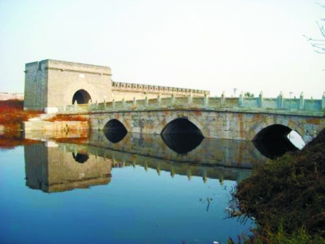
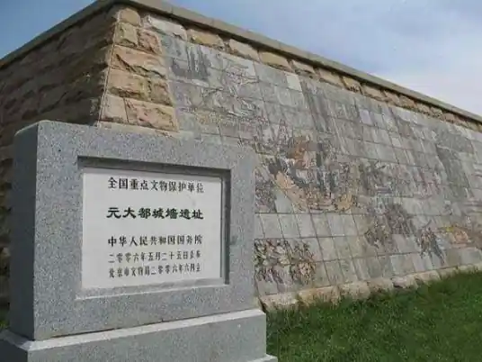

历史背景
元朝作为中国历史上第一个由少数民族统一全国的王朝，在建筑上融合了汉族传统、蒙古游牧与西亚元素，形成独特的空间与结构语言。与此同时，元代也延续并发展了大规模工程建设的传统，推动交通与水利的系统化建设。
- 多元文化融合：元代宫殿与佛寺中常见伊斯兰拱券、波斯花纹与汉族斗拱的混合。
- 交通与桥梁：元代修筑大运河、桥梁，促进南北通商与兵员调动。
- 城市规划：忽必烈建大都（今北京），城郭布局体现东西方结合的城市形式。
元朝建筑工程数据可视化
元朝·建筑类型统计
注：元代建筑以宫殿、佛寺与桥梁为主，反映出统治者与宗教机构在建造活动中的主导地位。
元朝·建筑材质分析
注：元代建筑在传统木构之外，砖石与拱券结构开始被更广泛运用，展现出东西合璧的建筑语言。
元朝代表性建筑成就
点击任意卡片查看详细信息

通惠河桥梁
元大都漕运命脉的关键工程，以高阔桥拱保障粮船通行，集水闸、交通于一体，构建起都城经济命脉的物理支撑体系。

元大都（今北京）
元大都是元朝的都城，继承了汉唐都城的布局，并融入蒙古传统营帐式区域划分，是东西方建筑与城市布局交融的典型。